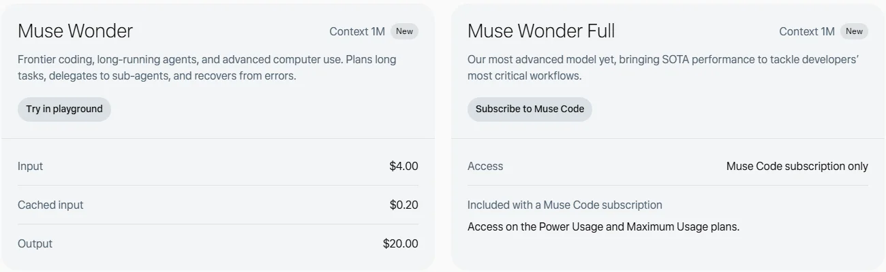

MetaMeta Platforms · Meta 超级智能实验室
用 14 个月重建 AI 体系的社交巨头：Meta 超级智能实验室推出 Muse 系列模型与个人 Agent，开放 8,160 亿参数的 Muse Spark Open，全年资本开支 1,350 亿至 1,450 亿美元。
一页结论
- 重建后的反攻：Meta 称 14 个月前开始全面改造 AI 体系，从重建基础走到前沿；Muse Spark（7 月 1.1 版）、Muse Wonder（10 月）相继发布S1S3
- 模型为 Agent 而生：Muse Wonder 主打长时 Agent、编程与电脑操作，具备跨对话的“主动记忆”和遇难不弃的“主动专注”S1S2
- 开放权重重回前沿：Muse Spark Open（8,160 亿 / 激活 420 亿）是海外厂商中最接近旗舰的开放权重模型，但采用自定义许可证，商用有收入上限S5
- 大众 Agent 率先起量：个人 Agent Muse 上线后北美账号超过 1,000 万，约四分之一每天使用S4
- 投入最重：全年资本开支 1,350 亿至 1,450 亿美元，三季度自由现金流为负S4
01公司介绍
02公司战略
Meta 的目标是“人人可用的个人超级智能”：用自研模型驱动个人 Agent，用社交与通讯应用分发，用开放权重扩大生态。
- 个人 Agent 优先：Muse 面向大众处理生活与小生意事务S4
- 模型对准 Agent 场景：法律、金融、健康等专业领域与前沿编程能力S1
- 开放权重：在 AWS、Google Cloud、微软、Hugging Face 均可下载S5
- 安全框架：按“Meta 超级智能扩展框架”训练、评估和发布最强模型S1
03模型矩阵与定位
| 模型 | 定位 | 价格 | 上下文 |
|---|---|---|---|
| Muse Wonder Full | 最强模型，面向开发者最关键的工作流 | 仅限 Muse Code 订阅（Power / Maximum） | 100 万S2 |
| Muse Wonder | 前沿编程、长时 Agent、电脑操作 | 输入 $4 / 输出 $20 | 100 万S2 |
| Muse Spark 1.1+ | 多模态推理，面向 Agent 任务 | Meta Model API | — |
| Muse Spark Open | 开放权重，8,160 亿 / 激活 420 亿 | 免费下载（自定义许可） | —S5 |
| Muse Glimmer 30B | 开放权重小模型 | Apache-2.0 | —S7 |
价格单位：美元 / 百万 token。

04产品与 Agent 布局
应用层
个人 Agent Muse（手机、网页、macOS）Muse Code 编程 AgentMeta AI 助手Muse for Small Business
开发者平台
Meta Model APIMuse Code SDK
模型层
Muse Wonder / Wonder FullMuse SparkMuse Spark Open、Muse Glimmer（开放权重）Muse Image
算力层
Meta 自建数据中心
渠道Facebook、Instagram、WhatsApp 等 Meta 应用应用商店云平台（开放权重）
个人 Agent Muse 的详细分析见《编程与办公智能体》系列中的 Muse 一篇。
05开放权重
| 模型 | 发布 | 许可 |
|---|---|---|
| Muse Spark Open（816B-A42B） | 2026-10-15 | Muse 模型许可：允许使用、修改、微调、蒸馏与再分发，但需标注“Built with Muse Spark Open”，商用有收入上限S5 |
| Muse Glimmer 30B | 2026 | Apache-2.0S7 |
Muse Spark Open 可在两台 512GB 内存的 Mac Studio 上运行；第三方评测中智能指数 39 分，编程能力落后于 Kimi K3、GLM 5.3 等国产开放模型S5。
06商业模式
| 收入来源 | 说明 |
|---|---|
| 广告 | Meta 收入的主体，AI 用于推荐与广告投放 |
| API | Muse Wonder 按 token 计费S2 |
| 订阅 | Muse Code 订阅（Power、Maximum）；Muse 个人 Agent 订阅（第三方报道）S2S9 |
经济性：扎克伯格称 Muse 计算消耗大，预计一年内成本效率提高 10 倍以上；AI 的直接收入目前远小于投入S4。
07上下游与渠道
上游：算力
Meta 自建数据中心，全年资本开支 1,350 亿至 1,450 亿美元S4
Meta
Muse 模型、Muse Agent、Meta AI
渠道
生态
开放权重开发者社区1Password 等 Muse 合作方
下游客户
大众消费者与小生意开发者
08用户与收入
09开发者口碑
以下来自媒体与第三方评测（B 级来源）。
10安全合规
11近期动态
12潜在风险分析意见
| 风险 | 表现 | 可能程度 |
|---|---|---|
| 投入回报 | 巨额资本开支与 AI 直接收入不匹配，自由现金流转负S4 | 高 |
| 隐私信任 | 个人 Agent 需要读取大量私人数据（分析意见） | 高 |
| 编程市场 | Muse Code 面对 Claude Code、Codex 的领先 | 中 |
| 开放许可争议 | 自定义许可限制商用，社区接受度存疑S5 | 低 |
“可能程度”为基于现有公开信息的判断，不是量化预测。
13综合结论分析意见
优势
- 数十亿用户的分发入口
- 最大规模的海外开放权重模型
- 充足的资本
劣势
- 起步晚，开发者生态弱
- 隐私口碑
机会
- 大众个人 Agent 市场
- 开放权重带来的开发者回流
威胁
- 成本压力
- OpenAI、Google 在 C 端的竞争
对 AI 产品团队的启示
- 落后者可以换赛道：Meta 没有正面追通用聊天，而是押注个人 Agent 这一新形态。
- 开放权重是争取开发者的杠杆：最强开放模型能吸引社区，但许可证限制会削弱效果。
- 模型与产品同步设计：Muse Wonder 的“主动记忆”“主动专注”直接服务个人 Agent 体验。
- 单位成本决定规模化速度：个人 Agent 越受欢迎，成本压力越大。
信息缺口
以下信息未找到可靠的公开来源，本报告不做推测。
- Muse Spark 系列的 API 价格
- Muse 订阅的官方价格
- Meta AI 助手的最新用户数
- AI 相关收入
来源
A 官方 · B 权威媒体或第三方 · C 社区（仅用于口碑与线索）。访问日期均为 2026-11-02。
- S1 · AIntroducing Muse Wonder and Muse Wonder FullMeta Newsroom · 2026-10-12
- S2 · AMuse WonderMeta 开发者平台
- S3 · AIntroducing Muse Spark 1.1Meta 研究博客 · 2026-07-09
- S4 · BMeta Q3 revenue tops estimates and Zuckerberg says Muse accounts have topped 10 million美联社（经 News4JAX 转载） · 2026-10-21
- S5 · BMeta Muse Spark OpenThe New Stack · 2026-10
- S6 · BMeta Superintelligence LabsWikipedia
- S7 · Ameta-models on Hugging FaceHugging Face
- S8 · BMeta debuts Muse Code to take on Anthropic and OpenAICNBC · 2026-08-05
- S9 · AHow We Built Safety Into MuseMeta 研究博客 · 2026-09-08